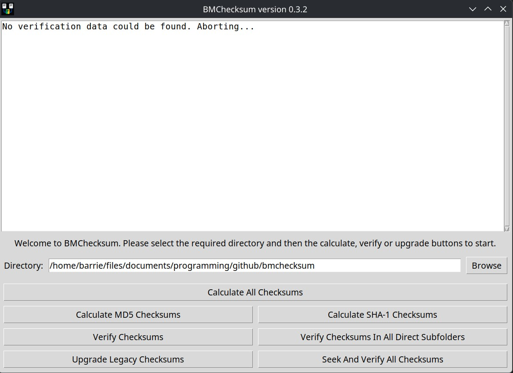
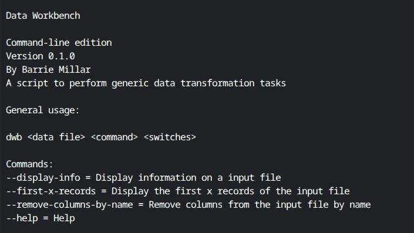
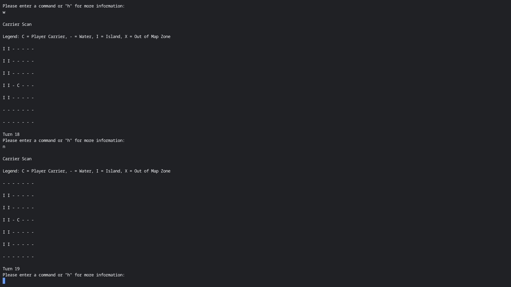

Hi, I'm Barrie Millar
I'm a Data Automation & Platform Developer working for Crowe UK with broad programming and IT experience
I started my technology journey early in life, learning to program in BASIC at a young age on an old Amstrad CPC464. I had only an instruction manual and a curious mind, but I was inspired by the possibilities I could see in the words. My interest in technology only grew from there and after school, I embarked on a university education in the field and attained a degree and a master's degree.
However, my life did not progress as I had envisaged, family responsibilities came to the fore and I spent a number of years in a caring role, first informally, and then formally. Despite this, my life circumstances have recently changed and after completing full-stack web development training with Code Institute, I started work for Crowe UK as an Alteryx Developer.
From there, my role evolved rapidly. I gained Alteryx Core and Advanced certifications while working on a variety of projects at Crowe, before expanding into Python and KNIME. More recently, I built and deployed a widely used internal web platform for business tools, taking responsibility for everything from infrastructure configuration to full-stack application development and deployment. I continue to build my software portfolio and broaden my skills through ongoing professional development in areas including AI, Azure and data engineering.
Qualifications
| Course | Institution | Date Completed |
|---|---|---|
| Microsoft Certified: Azure Fundamentals (AZ-900) | Microsoft | November 2026 |
| Alteryx Designer Advanced Certification | Alteryx | March 2025 |
| Alteryx Designer Core Certification | Alteryx | February 2025 |
| Alteryx Foundation Micro-Credential | Alteryx | January 2025 |
| Full Stack Software Developer: Skills Bootcamp | Code Institute | August 2024 |
| MSc E-Commerce (Technology) | Swansea Institute of Higher Education | March 2008 |
| BSc Software Engineering | Swansea Institute of Higher Education | July 2002 |
| A-Levels (A to B grades) in Information Technology and Electronics | Bro Myrddin | August 1999 |
| 6 GCSEs (A to C grades) including Mathematics and English | Bro Myrddin | August 1997 |
| Microsoft Certified: Azure Fundamentals (AZ-900) from Microsoft (Completed November 2026) |
| Alteryx Designer Advanced Certification from Alteryx (Completed March 2025) |
| Alteryx Designer Core Certification from Alteryx (Completed February 2025) |
| Alteryx Foundation Micro-Credential from Alteryx (Completed January 2025) |
| Full Stack Software Developer: Skills Bootcamp from Code Institute (Completed August 2024) |
| MSc E-Commerce (Technology) at Swansea Institute of Higher Education (Completed March 2008) |
| BSc Software Engineering at Swansea Institute of Higher Education (Completed July 2002) |
| A-Levels (A to B grades) in Information Technology and Electronics at Bro Myrddin (Completed August 1999) |
| 6 GCSEs (A to C grades) including Mathematics and English at Bro Myrddin (Completed August 1997) |
Software Projects

BMChecksum
A file hashing program to store and later verify the checksums of files
Technology: Python
Status: Command-line and Tkinter GUI editions functional, development continues
Individual Software Portfolio

Analytics Lab
A demonstration and exploration of data analytics, science and engineering
Technology: Python (may expand to others)
Status: Early stages, likely to be expanded in various ways into the future

Carrier Directive
A text-mode strategic game inspired by the 1988 game Carrier Command
Technology: Python
Status: Progressing
Collaborative Software Portfolio
Technical Courses
| Course | Institution | Date Completed |
|---|---|---|
| ETL and ELT in Python | DataCamp | February 2026 |
| Microsoft Azure Virtual Training: Fundamentals | Microsoft | February 2026 |
| Introduction to Data Engineering | DataCamp | January 2026 |
| TypeScript for JavaScript Developers | LinkedIn Learning | August 2025 |
| Learning PowerShell | LinkedIn Learning | July 2025 |
| Power BI Essential Training (2024) | LinkedIn Learning | July 2025 |
| Learn CSS - Responsive Design | Codecademy | May 2023 |
| Learn CSS - Box Model and Layout | Codecademy | May 2023 |
| Learn CSS - Flexbox and Grid | Codecademy | March 2023 |
| Building Interactive JavaScript Websites | Codecademy | May 2022 |
| Learn JavaScript | Codecademy | March 2022 |
| Learn CSS | Codecademy | March 2022 |
| Learn HTML | Codecademy | February 2022 |
| ETL and ELT in Python with DataCamp (Completed February 2026) |
| Microsoft Azure Virtual Training: Fundamentals with Microsoft (Completed February 2026) |
| Introduction to Data Engineering with DataCamp (Completed January 2026) |
| TypeScript for JavaScript Developers with LinkedIn Learning (Completed August 2025) |
| Learning PowerShell with LinkedIn Learning (Completed July 2025) |
| Power BI Essential Training (2024) with LinkedIn Learning (Completed July 2025) |
| Learn CSS - Responsive Design with Codecademy (Completed May 2023) |
| Learn CSS - Box Model and Layout with Codecademy (Completed May 2023) |
| Learn CSS - Flexbox and Grid with Codecademy (Completed March 2023) |
| Building Interactive JavaScript Websites with Codecademy (Completed May 2022) |
| Learn JavaScript with Codecademy (Completed March 2022) |
| Learn CSS with Codecademy (Completed March 2022) |
| Learn HTML with Codecademy (Completed February 2022) |
Employment
| Developer - Data Automation & Platform Developer at Crowe UK (April 2026 onwards) |
| Promoted internally in recognition of performance and increased responsibility. |
| Initially continued developing data automation workflows using Alteryx and KNIME, with an increasing focus on Python-based solutions. |
| Built an end-to-end internal application platform, covering infrastructure configuration, full-stack Python application development and deployment. |
| Delivered the platform for firm-wide use in August 2026 using Python, FastAPI and JavaScript, with task queuing, execution of multiple business tools, report generation and cloud-based authentication. |
| Supported and maintained the platform and its business tools following launch, including complex data transformation applications. |
| Continuing to extend the platform with new capabilities, new and upgraded tools, dashboards and planned cloud-based integrations. |
| Configuring and maintaining Windows Server and IIS application hosting, alongside supporting services including Git source control, task scheduling and automated application recovery. |
| Making extensive use of AI to support application development, troubleshooting and maintenance. |
| Working with stakeholders throughout development to understand requirements for new tools and upgrades, prioritising improvements and supporting deployments. |
| Mentoring team members and providing technical guidance and support with their work. |
| Expanding skills through learning in various areas, including AI, Azure, Power Platform and data engineering to support future integration capabilities and enhance general skills. |
| Analyst - Data Automation Developer at Crowe UK (August 2025 to April 2026) |
| Transitioned from a Junior Alteryx Developer role to a Data Automation Developer, expanding into multi-platform automation. |
| Designing and maintaining data automation workflows using Alteryx, KNIME and VBA. |
| Extending low-code automation by developing standalone Python solutions to provide enhanced flexibility and capability. |
| Building a scalable full-stack web-based platform using Python, FastAPI and HTML/CSS to host and deploy current and future automation capabilities. |
| Delivering technical training to new team members to share best practices and improve overall capability. |
| Providing ongoing support and guidance to stakeholders to ensure smooth adoption and effective use of automation tools. |
| Analyst - Junior Alteryx Developer at Crowe UK (December 2024 to August 2025) |
| Produced and maintained Alteryx Designer and Alteryx Server workflows to meet business requirements and streamline manual processes. |
| Gained Alteryx Designer Foundation, Core and Advanced certifications. |
| Built VBA-based desktop solutions to complement automated workflows where appropriate. |
| Developed complementary Python-based solutions to extend capabilities inside the Alteryx framework. |
| Delivered training and provided ongoing support to stakeholders to ensure effective use of workflows. |
| Personal Assistant with IT Support (November 2011 to April 2024) |
| Providing day-to-day care to an individual with complex medical and social needs. Includes administering medication, PEG feeding, record keeping and medical testing. |
| Responsible for leading the design and implementation of policies and procedures as required. |
| Leading teams and training new staff members. |
| Responsible for providing all IT support required including administrative, technical and creative tasks. These include hardware and software maintenance, management of portable devices, IT backup and security and document management. |
Skills & Approach
| Extensive programming experience, recently in Python, FastAPI, JavaScript, HTML and CSS with Git version control. |
| Built and deployed a platform end-to-end including conception, system design, software development and ongoing maintenance using Windows Server/IIS, Python, FastAPI, JavaScript and Entra ID. |
| Microsoft Certified: Azure Fundamentals (AZ-900). |
| Past experience includes C++, Java, PHP, SQL, Django and Bash. |
| Considerable data transformation and automation experience using Python, Alteryx and KNIME. |
| Experience with Alteryx Designer and Server, VBA and Power Platform. |
| Alteryx Designer Core and Advanced certified. |
| Experience with Windows Server/IIS hosting, task scheduling, scripting and automated recovery. |
| Have run Linux home servers for many years. |
| Broader experience covers operating systems, hardware, office applications, TCP/IP, SSH, RDP, VNC and practical security. |
| Virtualisation and container experience: Docker, VirtualBox, QEMU/KVM and Incus. |
| Use AI extensively for development, troubleshooting, research and maintenance, using Claude Code, ChatGPT, Codex and GitHub Copilot. |
| Developed machine-learning workflows in Alteryx and explored machine learning in customer support through my master's dissertation. |
| Driven, professional and adaptable, comfortable working independently and takes pride in high standards. |
| Experienced working with stakeholders to understand requirements, explain technical concepts and prioritise improvements. |
| Providing team leadership, training and mentoring with an approachable and supportive style. |
| Constantly building knowledge in new and existing skills through projects, courses and certifications, including in AI, Azure, Power Platform and data engineering. |
Personal Interests
| Technology in general, including programming, artificial intelligence, and virtual reality, etc. |
| Formula 1 racing |
| World affairs |
| Strategic gaming, both traditional and computerised |
| Flight, including gliders, powered aircraft and drones |